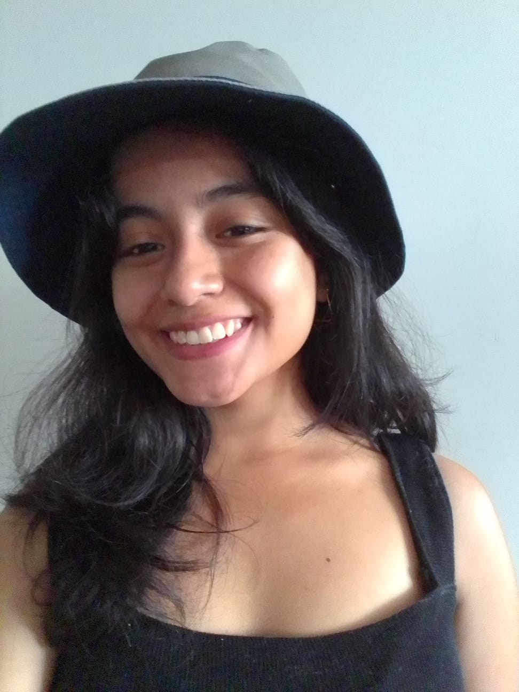
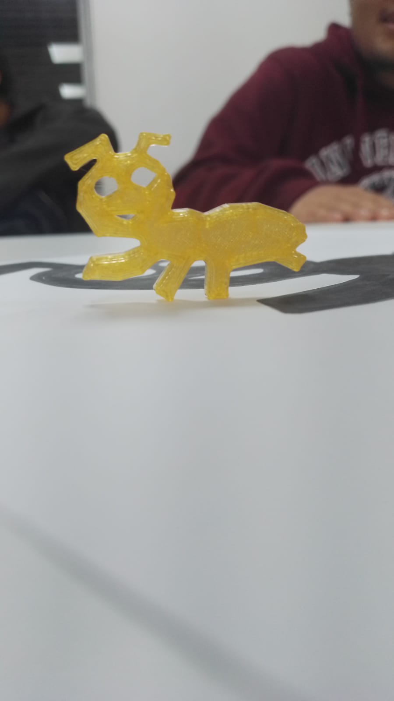
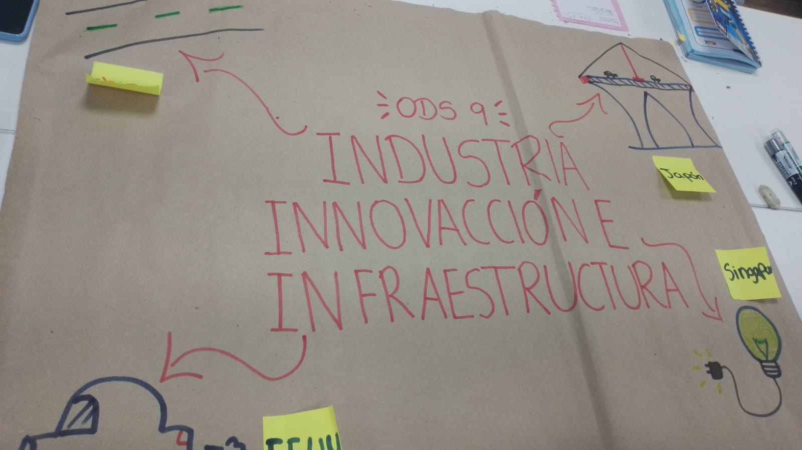
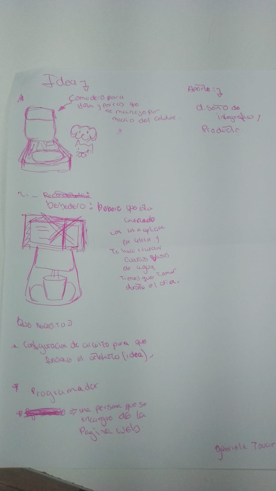

|  |
sobre miTengo 23 años,estudio la cerrera de Dirección y Diseño Gráfico en el Instituto Toulouse Lautrec. Curso el 5to ciclo de la carrera, me dedico a hacer ilustraciones,rediseñar algunas prendas y tambien hacer portadas para albums en plataformas musicales. |
|  |
MISIÓN 1:En la primera realizamos equipos para poder conocernos mas y conversar sobre nuestras ideas cada equipo realizo sus dibujos.Fue nuestro primer trabajo grupal y tambien ponernos un nombre como equipo.usamos la impresora de 3d para hacer el modelado de uno de los de dibujos que fue una hormiga (nombre del equipo). |
|  |
MISIÓN 2En grupo escogimos uno de los objetivos de desarrollo sostenible el cual fue la ods número 9 industira innovacion e infraestructura en el cual vimos como podriamos aplicar algunos avances que otros paises ya habian inplementado como por ejemplo uno de estos fue la contruccion de pistas y carreteras que no contaminan el ambiente. |
|  |
MISIÓN 3De manera individual cada uno propuso sus ideas y a quienes necesitaba para poder hacerlas. En este caso propuse 2 ideas.Una de ellas es la de un comedero para mascotas que regula la cantidad de comida (esto es debido a la problematica de mascotas con obesidad) el usurio puede manejarlo por medio de un aplicativo en su celular o tambien puede progamarlo al comedero de manera directa. la segunda idea es de un dispensador de agua que te indica cuantos vasos tienes que tomar para estar hidratado durante el día y tambien si tienes sed en la madrugada este cuenta con una pequeña luz que se encendera cuando estes cerca. |